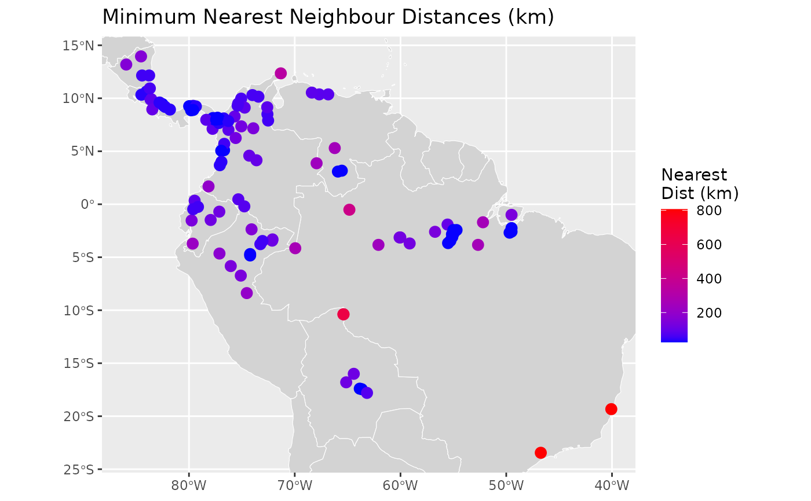
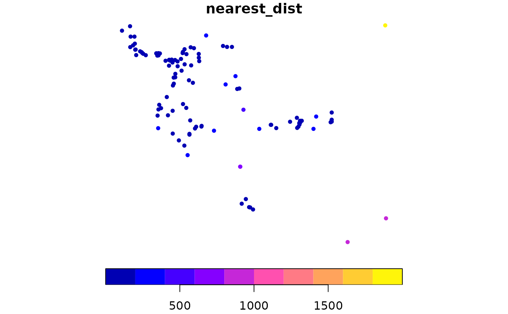

Calculate Nearest Neighbour Distances for Spatial Features
Source:R/spat_nearest_dist_sf.R
nearest_dist_sf.RdThis function calculates the nearest neighbour distance for each feature in an sf object. It rasterizes the input data at a specified resolution, converts to polygons, and then computes the distance to the nearest neighbour for each feature.
Arguments
- sf_object
An sf object with CRS
EPSG:4326. Must contain at least 2 features.- resolution
Numeric. The resolution for rasterization in degrees. Default is 0.25. Must be a single positive numeric value. The smaller the resolution, the more accurate the distance calculations, but also the more computationally intensive.
- n_cores
Integer. The number of cores to use for parallel processing. Default is
6L.
Value
An sf object identical to the input sf_object with an additional
column nearest_dist containing the distance (in kilometres) to the
nearest neighbour for each feature.
Details
The function performs the following steps:
Validates that the input is an sf object with CRS
EPSG:4326and contains at least 2 featuresRasterizes the input data at the specified resolution
Converts raster cells to polygons
Calculates centroids for faster distance computation
Computes the distance to the second nearest neighbour (the first is the feature itself)
Joins the calculated distances back to the original sf object
Examples
# Create sample sf object
ecokit:::load_packages(sf, dismo, fs, dplyr, tibble, rworldmap)
map <- rworldmap::getMap(resolution = "low") %>%
sf::st_as_sf()
occurrence <- system.file(package = "dismo") %>%
fs::path("ex", "bradypus.csv") %>%
read.table(header = TRUE, sep = ",") %>%
tibble::tibble() %>%
st_as_sf(crs = 4326L, coords = c("lon", "lat"))
head(occurrence)
#> Simple feature collection with 6 features and 1 field
#> Geometry type: POINT
#> Dimension: XY
#> Bounding box: xmin: -65.4 ymin: -17.45 xmax: -63.6667 ymax: -10.3833
#> Geodetic CRS: WGS 84
#> # A tibble: 6 × 2
#> species geometry
#> <chr> <POINT [°]>
#> 1 Bradypus variegatus (-65.4 -10.3833)
#> 2 Bradypus variegatus (-65.3833 -10.3833)
#> 3 Bradypus variegatus (-65.1333 -16.8)
#> 4 Bradypus variegatus (-63.6667 -17.45)
#> 5 Bradypus variegatus (-63.85 -17.4)
#> 6 Bradypus variegatus (-64.4167 -16)
plot(occurrence["species"], key.pos = NULL, pch = 20, col = "blue")

# Calculate nearest distances
result <- nearest_dist_sf(occurrence, resolution = 0.25, n_cores = 2)
head(result)
#> Simple feature collection with 6 features and 2 fields
#> Geometry type: POINT
#> Dimension: XY
#> Bounding box: xmin: -65.4 ymin: -17.45 xmax: -63.6667 ymax: -10.3833
#> Geodetic CRS: WGS 84
#> # A tibble: 6 × 3
#> species geometry nearest_dist
#> <chr> <POINT [°]> <dbl>
#> 1 Bradypus variegatus (-65.4 -10.3833) 645.
#> 2 Bradypus variegatus (-65.3833 -10.3833) 645.
#> 3 Bradypus variegatus (-65.1333 -16.8) 115.
#> 4 Bradypus variegatus (-63.6667 -17.45) 26.6
#> 5 Bradypus variegatus (-63.85 -17.4) 26.6
#> 6 Bradypus variegatus (-64.4167 -16) 115.
plot(result["nearest_dist"], pch = 20)
plot(map$geometry, add = TRUE, border = "darkgrey")
